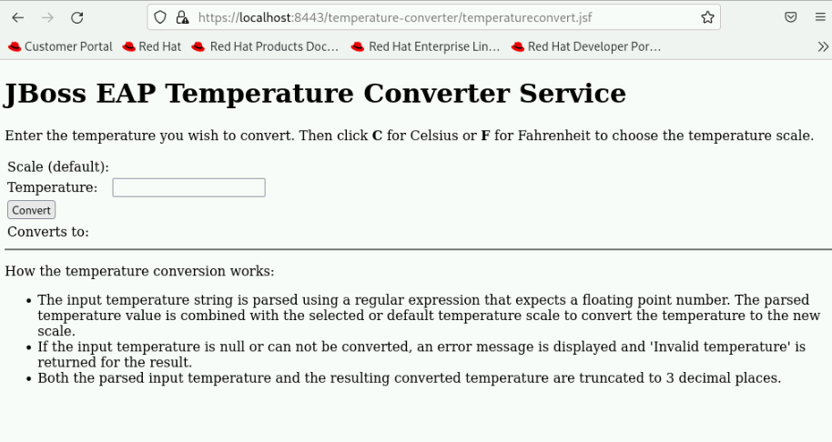

Configuring the Web Subsystem
Configuring the Root Web Application
-
Any application you deploy on Red Hat JBoss EAP 8 uses a standard HTTP address.
-
For example, an application called app.war is available, by default, at http://<server>:8080/app.
-
The /app is defined as the context path according to the Jakarta Enterprise Edition (Jakarta EE) specifications. If a HTTP request does not provide a context path , then JBoss EAP displays a default JBoss welcome application.
<subsystem xmlns="urn:jboss:domain:undertow:12.0" ...> <buffer-cache name="default"/> <server name="default-server"> ...output omitted... <server name="default-server"> <http-listener name="default" socket-binding="http" redirect-socket="https" enable-http2="true"/> <https-listener name="https" socket-binding="https" ssl-context="applicationSSC" enable-http2="true"/> <host name="default-host" alias="localhost"> <location name="/" handler="welcome-content"/> <http-invoker http-authentication-factory="application-http-authentication"/> </host> </server> ...output omitted... <handlers> <file name="welcome-content" path="${jboss.home.dir}/welcome-content"/> </handlers> </subsystem> -
Notice that the / root path uses a handler called welcome-content, and that this welcome-content handler defines the location of the JBoss welcome application.
-
The default application can be replaced in one of two ways:
-
Changing the welcome-content file handler.
-
Changing the default-web-module attribute on the default-host tag in the undertow subsystem.
-
Configure Server Listeners
-
The undertow subsystem can start several web servers or web containers in a single JBoss EAP instance.
-
Each <server> tag starts an instance of the undertow web engine.
-
Three listener types are available for each server:
-
HTTP: This listener type handles HTTP requests.
-
HTTPS: This listener type handles HTTPS requests.
-
AJP: This listener type handles Apache Java Protocol (AJP) requests. The AJP protocol communicates JBoss EAP instances with the load balancer.
-
Configure SSL Connections
-
HTTPS is a protocol that encrypts network traffic.
-
Red Hat JBoss EAP 8 can encrypt the traffic in both HTTP ports: the management port, and the application serving port.
Java KeyStore (JKS)
-
A Java KeyStore (JKS) is a storage facility for cryptographic keys and certificates.
-
A JKS can store several types of public and private keys, such as the certificates used for a HTTPS connection.
-
The Java Development Kit (JDK) provides the keytool command to manage JKS repositories.
-
You will need to generate a new RSA key pair, store it in a keystore file. Use the following command for same.
keytool --genkeypair -alias server -keysize 2048 -keyalg RSA -keystore application.keystore
|
Remember to open the HTTPS port in the firewall. The default port for HTTPS is 8443. |
-
The SSL certificate need to be placed under jboss.server.config.dir as mentioned in $JBoss_HOME/standalone/configuration/standalone.xml in below snippets.
...<output_omitted>... <security-realms> <identity-realm name="local" identity="$local"/> <properties-realm name="ApplicationRealm"> <users-properties path="application-users.properties" relative-to="jboss.server.config.dir" digest-realm-name="ApplicationRealm"/> <groups-properties path="application-roles.properties" relative-to="jboss.server.config.dir"/> </properties-realm> ...<output_omitted>...
Lab: Configuring the Web Application using HTTPS listener
Outcome: In this lab, you deploy a web application that can be accessed using a secure connection from a browser using Red Hat JBoss EAP 8.
Pre-requisites: Download the applications (WAR file) we will deploy in this exercise under /opt directory:
-
Start the JBoss EAP standalone server.
[vagrant@server ~]$ cd /opt/EAP-8.0.0/bin [vagrant@server bin]$ ./standalone.sh
-
Deploy the temperature converter application.
-
Open a new terminal window and run the following commands to start the management CLI connection to your JBoss EAP instance:
[vagrant@server ~]$ cd /opt/EAP-8.0.0/bin [vagrant@server bin]$ sudo -u jboss ./jboss-cli.sh -c [standalone@localhost:9990 /]
-
Deploy the /opt/temperature-converter.war application file:
[standalone@localhost:9990 /] deploy /opt/temperature-converter.war
-
-
Generate a new key pair and store it in a keystore file named application.keystore using command shown below.
[vagrant@server ~]$ cd /opt/EAP-8.0.0/standalone/configuration [vagrant@server configuration]$ keytool --genkeypair -alias server -keysize 2048 -keyalg RSA -keystore application.keystore Enter keystore password: <Enter New Password> Re-enter new password: <Enter New Password> What is your first and last name? [Unknown]: jboss What is the name of your organizational unit? [Unknown]: jboss What is the name of your organization? [Unknown]: jboss What is the name of your City or Locality? [Unknown]: Mumbai What is the name of your State or Province? [Unknown]: MAH What is the two-letter country code for this unit? [Unknown]: IN Is CN=jboss, OU=jboss, O=jboss, L=Mumbai, ST=MAH, C=IN correct? [no]: yes Generating 2,048 bit RSA key pair and self-signed certificate (SHA256withRSA) with a validity of 90 days for: CN=jboss, OU=jboss, O=jboss, L=Mumbai, ST=MAH, C=IN
-
Confirm application.keystore is created successfully.
[vagrant@server configuration]$ ll ...<output_omitted>... -rw-r--r--. 1 jboss jboss 2712 May 2 07:53 application.keystore ...<output_omitted>...
-
Open port 8443 for SSL connection to be accessible.
[vagrant@server configuration]$ sudo firewall-cmd --permanent --add-port=8443/tcp [vagrant@server configuration]$ sudo firewall-cmd --reload
-
The SSL connection should now be available for all applications including the root application. Navigate to https://localhost:8443/ and test the SSL connection for the root application.
-
Similarly, navigate to https://localhost:8443/temperature-converter and test the SSL connection for the application. Accept the SSL certificate and you should be able to view the application as shown in below screenshot.
 -
Exit the management CLI, and stop Red Hat JBoss EAP 8 the instance by pressing Ctrl+C in the terminal window.